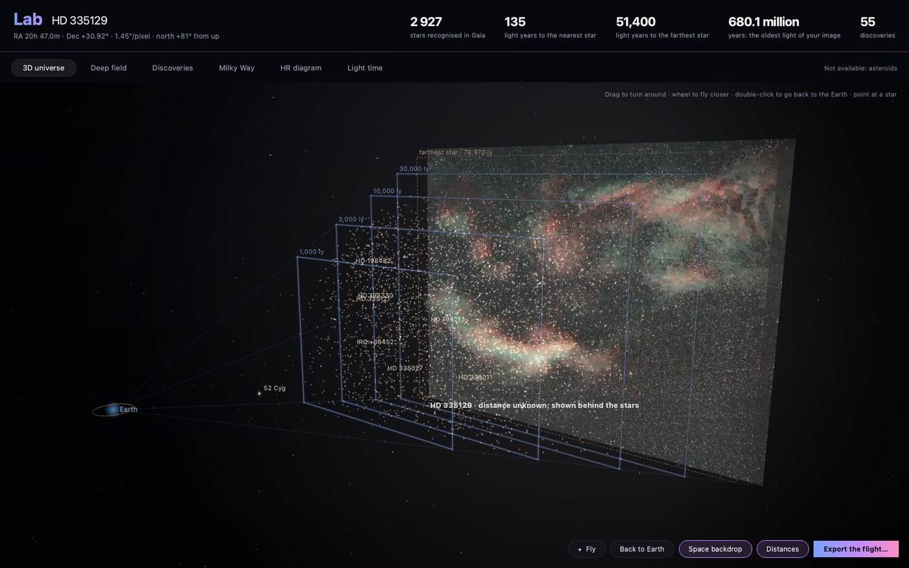
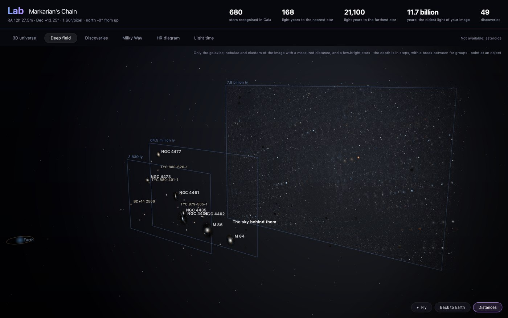
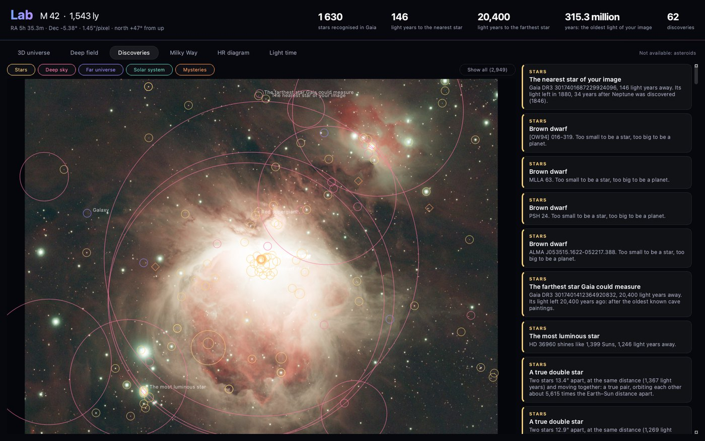
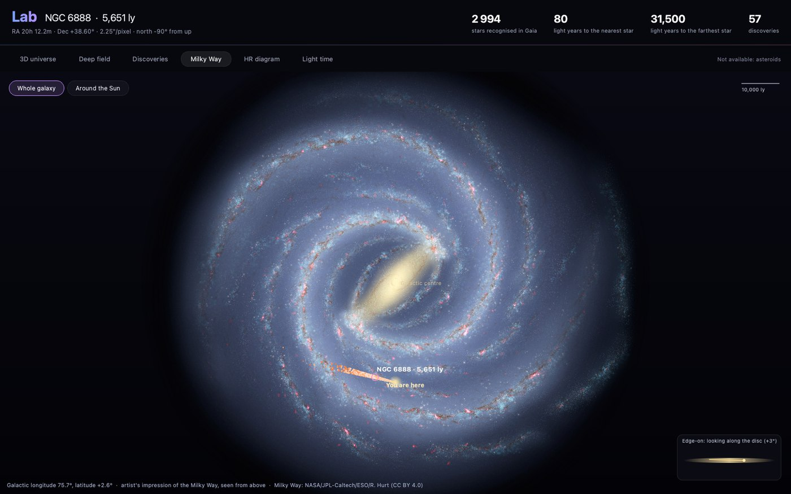
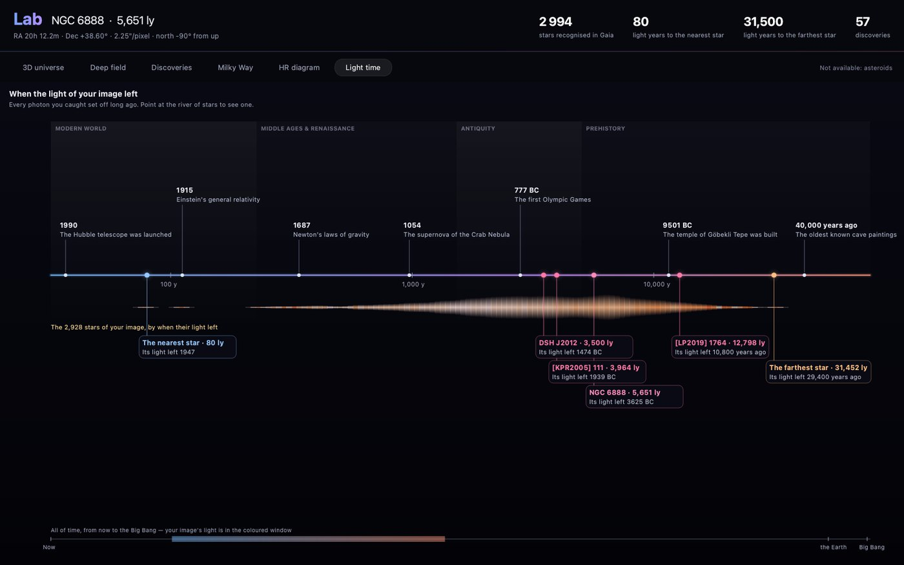

Changelog
Changelog
What changes from one version of COSMO to the next.
0.7.0
- Stack, several nights: subs from several nights go into one stack, each night calibrated with its own darks and flats. Add folder brings another night, and each sub shows where it comes from.
- Stack window redrawn in COSMO's style: steps, a card per night, one main button, a sky map behind it while preparing. Incompatible folders are explained, Seestar darks are handled better, and the folder dialog opens next to the last subs folder.
- Alignment on star-poor fields (long focal length, planetary nebulae): a sub that shows too few stars is searched again at a lower threshold, and more subs are kept. A new Advanced alignment panel, folded by default, has sliders for the detection threshold, blurred stars, transparency, paired stars and largest shift, with Reset. A sub taken at dawn or under the Moon is no longer chosen as the reference (on a Seestar series of C 15, 75 of 81 subs kept instead of none).
- COSMOSharp v15: about half the far halo and half the one-sided glow of v12 around stars. Still experimental.
- Before / after of the selected step, with a bar dragged across the image.
- Export in several formats at once (FITS, TIFF, PNG, JPEG) under the same name; the formats ticked are kept for next time.
- Narrowband palette opens at 45 % amount, and the contact-sheet thumbnails show that amount.
- Lab: new pages for the object's discovery, its view in other lights (X-rays, infrared…) with an Overlay mode, a guided tour of your image at full resolution, a star told as a character and what the object sees of us. Light time redrawn: eras, history landmarks, a river of your stars, pinned objects and a photon to follow.
- Linux: COSMO is now available as an AppImage and a .tar.gz (x86_64).
- Minor bug fixes (French numbers in the Analysis, the Gaia depth button, the view staying on the nebula after Separate).
0.6.2
- COSMOStars v54: the nebula keeps its relief after the separation. The previous versions had slowly smoothed it away; v54 keeps about 40 % more fine relief (3 to 8 pixels) on the Crescent, and the thin filaments of the Veil are no longer removed as stars.
- COSMODenoise v2: trained on deep stacks against the same sky with much less exposure. Less grain for the same nebula detail than v1, and more faint stars kept.
- Gaia and the Lab now work behind an antivirus, a VPN or a company network that inspects secure connections: COSMO trusts the certificates your computer trusts. If a connection is still refused, the message says why, instead of "it needs the Internet".
- In French, every setting fits the right-hand panel: Stretch (GHS), Remove halo and Curves were cut on their right edge. Long options now go on two lines.
- Lab, 3D universe: your galaxy or nebula stays sharp when the view is still; it no longer turns blurry and over-bright once you stop moving.
- Minor bug fixes.
0.6.0
- The Lab (button next to Analysis, or Ctrl+L) places your image in the universe. 3D universe: the stars of your image at their Gaia distances, in deep space, with a short flight to start and a Fly button; the flight can be saved as a video or an animated image. Deep field: the galaxies and nebulae of the image at their measured distances (Markarian's Chain, about 60 million light years away, and the far sky behind it). Discoveries: what the image holds that you would not think of looking for (the nearest star, brown dwarfs, true double stars…), grouped by kind, with Show all. Milky Way: where your object sits in our galaxy. HR diagram and Light time: when the light of your image left, set against history. The Lab asks Gaia, SIMBAD and SkyBoT; only the coordinates of the image are sent.
- COSMO in French: the flag at the top switches the language (COSMO restarts). The tool names stay in English, as people know them; pipelines are the same files in both languages.
- One Stars tool: Separate, Reduce or Remove, chosen at the top of the tool, instead of separate tools that were easy to mix up.
- A compact top bar on narrow screens, and a cleaner welcome screen: the side panels show only once an image is open.
- Stack: darks and flats whose colour pattern is written differently (in small letters or with a trailing space, as some SharpCap files do) are accepted.





0.5.0
- COSMOSharp v12: sharper stars, as fine as BlurXTerminator at its default setting, with a separate setting for the nebula detail. Still experimental: a little flare can remain on one side of bright stars. Compare on NGC 6888 below.
- COSMOStars v49: fewer remains of stars after the separation (on NGC 6888, about a third fewer small dots).
- Separate stars no longer leaves a ring where the big bright stars were: the thin rim that StarXTerminator and COSMOStars leave on them (sharper after Sharpen) is taken out, the soft glow around the star stays.
- HDR multiscale reveals the structure of a bright core instead of just darkening it. It now works best on the linear image, just before Stretch (on M 42 at the default 50 %, about 1.5 times more detail in the core, its brightness kept); on a stretched image, the detail follows the core down. Default strength 50 %. A new Preview stretched button shows the linear image as your Stretch will make it, so you see what HDR brings out while you move the sliders.
- A new welcome screen: a night sky with star trails turning around the Pole Star, a smart telescope and a refractor on the horizon; your recent images now show as thumbnails. The side panels are a little transparent, on the welcome screen and with an image.
- A startup screen with the version, a word on the experimental networks (if you have an RC-Astro licence, prefer it) and a thank-you to the supporters, with the Ko-fi link. It can be turned off.
- Classic pipeline: it now separates the stars after the stretch, gives them their natural colours and puts them back; the nebula part is left free for you. Reset, in the pipeline menu, empties the pipeline to build your own.
- Contact button, at the top: copies contact@cosmo-astro.com, to report a problem or write. The image name shows the object (IC 1396A) with the file below, and COSMO opens on the whole screen.

 BlurXTerminatorCOSMOSharp v12
BlurXTerminatorCOSMOSharp v12

0.4.1
- Fixed: Stack failed at the very end, when saving, with subs that do not name their filter (“FITS header values must contain standard printable ASCII characters”).
- Stretch, automatic start: the black point now sits just under the darkest parts of the image. A nebula filling the frame (IC 1396) no longer comes out as a flat, milky veil; on an ordinary field nothing changes.
- The warning about a sky colour that is not neutral now suggests Background with Remove gradients off when the nebula fills the frame.
0.4.0
- COSMO Fire & Ice, the new default of Narrowband palette: OIII blue, Hα red, then orange and yellow as it brightens. Fitted on a hand-processed Draco stack (colour gap 0.029 over the whole image); where both lines are bright, OIII counts less, so no flat white (NGC 6888: 2.1 % of the crescent near white before, under 0.1 % now). Only three palettes remain: COSMO Fire & Ice, HOO, SHO, on bigger thumbnails.
- Protect the sky (Narrowband palette): takes the faint OIII out of the background, so raising OIII no longer turns the sky into blue patches.
- Star colours, first step of Stars after a separation: gives the stars of a dual-band stack their natural colours back, from the Gaia catalogue when the file says where the telescope pointed (651 stars matched on NGC 7000), with a Saturation slider.
- COSMOStars v47 replaces v44: on the same NGC 6960 test stack, 129 star remnants per megapixel instead of 418, and fewer stars left on bright nebula; the small spike left at the centre of a removed star is cleaned.
- Calibration in the Stack window: bias, darks, flats and dark flats, found in the folder or chosen by hand; a single file is used as a ready master. Subs calibrated in the camera (Seestar) need none.
- Full screen (F, Esc to leave) at any step; a slow preview now shows its progress.
- Fixed: a star core sharpened by COSMOSharp above 1 made NoiseXTerminator divide the whole image, and the sky went black at the stretch.


0.3.3
- COSMOStars v44 replaces v36: on an NGC 6960 test stack sharpened and denoised before the separation, 418 star remnants per megapixel instead of 2100. The colour under bright stars is matched, so no grey patch shows after a palette.
- Run up to <step>, at the bottom of the steps panel: applies, in order, the steps still to do before the selected one.
- Update check: COSMO says when a newer version is published (at most once a day, can be turned off in Help).
- Windows: install per user without administrator rights, a portable .zip, and a new version installs over the previous one.
- Fixed: a Nebula or Stars step added after Recombine did not reach the final image; tooltips showed as empty white rectangles.
0.3.0
- COSMO: the application no longer carries the name “Darkroom”.
- COSMOSharp, COSMODenoise, COSMOStars: the three in-house networks have a name and are marked Experimental, not recommended for finished images yet. The RC-Astro engines remain available from your own installation.
- Narrowband palette: two gradient palettes, Red, yellow and blue (the new default) and Red, gold and blue.
0.2.0
- Narrowband palette: false colours for dual-band stacks (SHO, HOO, Foraxx…), chosen on a contact sheet of the image.
- Soft star cores: the hard edge of a bright star melts into its halo.
0.1.0
- First version with installers for macOS and Windows: Stack (standard, automatic HDR, comet) and the processing tools of the linear and stretched image.